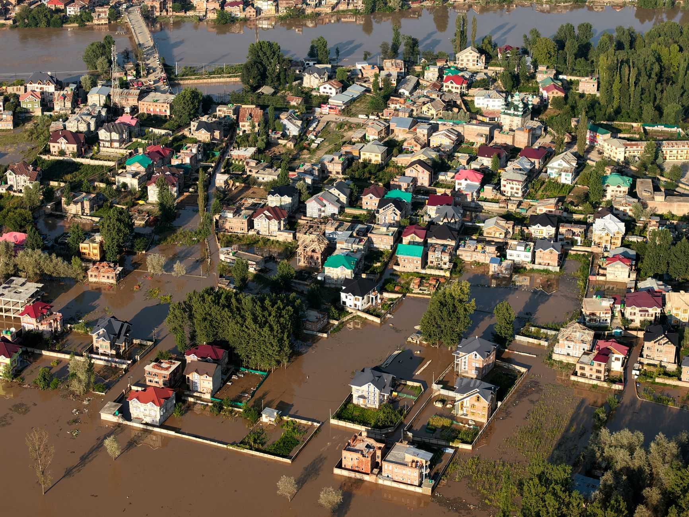

The sudden onset of the mountain floods
The disaster began with intense, localized rainfall that saturated the already fragile slopes of the Himalayan mountain range. In a matter of minutes, what started as heavy rain transformed into a wall of water, mud, and boulders that swept through narrow valleys. This rapid escalation is a hallmark of flash floods in high-altitude regions, where steep gradients allow water to gain immense kinetic energy almost instantly.
Witnesses from the region describe a sound like a low-frequency roar that preceded the arrival of the debris flow. As the flood moved through the Nepal-Tibet borderlands, it didn't just bring water; it brought the very earth itself, uprooting trees, destroying bridges, and burying entire sections of mountain roads under meters of silt and rock.
Tracing the path of destruction
To understand the scale of the tragedy, one must look at the geographical path the water took. The flood originated in the high-altitude glacial zones of Tibet before descending into the lower valleys of Nepal. This cross-border movement complicates rescue efforts, as different jurisdictions and terrains must be navigated simultaneously.
The sheer force of the water was unlike anything we have seen in decades; it felt as though the mountains themselves were moving downward.
The human and economic toll
Beyond the immediate loss of life, the economic repercussions for these mountain communities are staggering. Many of these villages rely heavily on seasonal tourism and small-scale agriculture. With roads washed away and fields buried under thick layers of mud, the ability to sustain a livelihood has been stripped away in a single afternoon.
Aid organizations are struggling to reach the most isolated areas. The destruction of bridges means that helicopters are currently the only viable way to deliver food, medicine, and emergency shelter. The cost of rebuilding the infrastructure required to reconnect these regions will likely run into millions of dollars, placing a heavy burden on local governments.
Climate change and mountain vulnerability
Meteorologists point to a disturbing trend of increasing extreme weather events in the Himalayas. As global temperatures rise, the melting of glaciers combined with more intense monsoon patterns creates a recipe for disaster. The stability of the permafrost, which acts as a natural glue for mountain slopes, is being compromised, leading to more frequent landslides.
This is no longer a theoretical threat; it is a lived reality for those residing in the shadow of the world's highest peaks. The Nepal-Tibet flash flood serves as a grim reminder that the environmental shifts happening at the poles are being felt with devastating intensity in the heart of Asia.
Looking toward future resilience
Experts argue that the only way to mitigate future disasters is through much more robust early warning systems. Installing sensors in glacial lakes and improving satellite monitoring could provide the precious minutes needed to evacuate downstream populations. Furthermore, there is a desperate need for more resilient engineering in mountain road construction.
As we navigate these turbulent times of natural upheaval and global change, it is often helpful to find moments of reflection and beauty in other forms of storytelling. For instance, if you are looking for a different kind of emotional journey, you might find interest in reading about Dolly Parton's Life Story Told Through Six Iconic Songs on our blog. Just as music captures the resilience of the human spirit, these stories help us process the complexities of our changing world.
See Also
If you enjoyed this Current Events article, check out Dolly Parton's Life Story Told Through Six Iconic Songs for more useful reading.